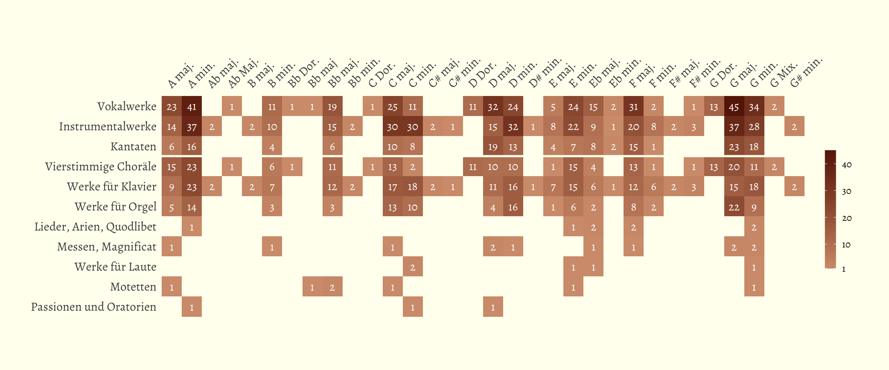

Analyzing Bach
December 1, 2019
Introduction
A little while ago I was watching a documentary series on Dutch television about one of the most important composers in the Netherlands: Johann Sebastian Bach. The documentary discussed parts of Bach’s life and the music he wrote during it. This documentary inspired me to learn more about the pieces Bach wrote, and since this is my life now, I might as well do it in R.
Collecting the data
In my search of a dataset, I found this old website, looking like it last got a major update in 2003, made by what appeared to be a Bach enthousiast called Bryen Travis. I tried to contact him to see if he was interested in collaborating, but I couldn’t get a hold of him. This website contained a list of all works by Bach, with some information about each of them. The website listed a few options, an online browser, a pdf containing slimmed down entries, and two files that I couldn’t get to work, presumably because they were in a format that have presumably become depracated since they were uploaded back in 1996, when the website was created. I could have used the pdf, but since it contained only the BWV number, the title of the piece, and the setting, I had to scrape the data I wanted from the website directly.
List of BWVs
The website browser contains an index which lists the links to each BWV.
Each BWV has its own html page in a subfolder. Thankfully, the html
pages were referred by BWV number, and not title, this made my next job
a lot easier. I decided to obtain the list of available BWVs from the
index page. There in total 1128 BWVs since a new piece was attributed to
Bach in 2008. However, the website doesn’t list all of them. The largest
number is 1120, but there’s some numbers missing (e.g. 141 and 142), and
some duplicate links too (e.g. 147). Therefore I couldn’t just loop from
1 through 1120, but had to extract just the numbers available. The code
for this is definitely a bit messy, but let’s have a look anyway. In
short, I read the html page as a character vecetor. I get all instances
when there’s a link (identified by the href tag), convert it from a
list to a vector, extract only the unique values, and then select only
the links where there’s numbers in front of a .html string. I convert
it to a character string again, and extract now only the numbers. I’m
99% sure that there is a more efficient way to do this, but this was the
best I could think of.
The packages I’ll use in this post are the following. The {danielR}
package is a package with my personal preferences, such as the origin of
the theme_bach() function and the colors I’ll use for the plotting,
which come from the {dutchmasters} package.
library(tidyverse)
library(rvest)
library(waffle)
library(ggmap)
library(danielR)
Let’s collect the BWVs:
index_url <- "http://www.bachcentral.com/BWV/index.html"
BWVs <- paste(readLines(index_url), collapse = "\n") %>%
str_match_all("<a href=\"(.*?)\"") %>%
unlist() %>%
unique() %>%
str_extract_all("[0-9]+.html") %>%
unlist() %>%
unique() %>%
str_extract_all("[0-9]+") %>%
as.character()
str(BWVs)
chr [1:1075] "1" "2" "3" "4" "5" "6" "7" "8" "9" "10" "11" "12" "13" "14" ...
I now have a list of 1075 numbers, corresponding to BWV numbers of which this website has an entry. The next thing I needed to do now was loop over these numbers, navigate to each of the webpages corresponding to that link, and scrape all 1075 webpages individually. This takes a little bit of time, but luckily the author of the pages was very consistent in the setup, so I didn’t need to build in fail-safes or condititions to account for irregularities. Before we’ll do that, I first initialized a data frame with the correct size for speed. I added the column names for convenience too.
col_names <- c("Title", "Subtitle_and_notes",
"BWV", "BWV_epifix", "CLC_BWV_w_epifix", "belongs after",
"voices_instruments",
"category1", "category2", "category3",
"cantate_cat1", "cantate_cat2")
scraped_data <- data.frame(matrix(ncol = 12, nrow = length(BWVs)))
colnames(scraped_data) <- col_names
Scraping the data
We now have a variable of the same dimensions and column names as I’ll
scrape from the website. Now it’s time to loop through the webpages and
collect the data. Each webpage contains what looks like a table, but
within the table it’s bulleted lists (denoted as ul). This might just
be how html builds up tables, but I thought it was a bit strange.
Nonetheless, it provided me with an easy hook to grab the values. I
remove all the white spaces (\t), and each new line was denoted by a
\n, which I used to split the strings into separate values. The
advantage of this approach is that when a field is empty, it will still
occupy an element in the character array. Then all I needed to do to
obtain the values is take every second element and add it as a row to
the data frame I created earlier. Now I have a dataset containing the
values from all of the 1075 webpages, with which I was quite pleased.
for (i in 1:length(BWVs)) {
print(sprintf("Scraping data for BWV %s", BWVs[i]))
url <- sprintf("http://www.bachcentral.com/BWV/%s.html", BWVs[i])
webpage <- read_html(url)
text <- webpage %>%
html_nodes("ul") %>%
html_text() %>%
gsub('[\t]', '', .) %>%
strsplit(., "\\n") %>%
unlist()
values <- text[seq(2,length(text),2)]
scraped_data[i, ] <- values
}
With this, I achieved the first goal I had for this little project, which was to find or create a dataset on Bach. Let’s see what it looks like:
str(scraped_data)
'data.frame': 1075 obs. of 12 variables:
$ Title : chr "Wie schön leuchtet der Morgenstern" "Ach Gott, von Himmel sieh darein" "Ach Gott, wie manches Herzeleid" "Christ lag in Todes Banden" ...
$ Subtitle_and_notes: chr "Kantate am Fest Mariae Verkündigung (Festo annuntiationis Mariae)" "Kantate am zweiten Sonntag nach Trinitatis (Dominica 2 post Trinitatis)" "Kantate am zweiten Sonntag nach Epiphanias (Dominica 2 post Epiphanias)" "Kantate am Osterfest (Feria Paschatos)" ...
$ BWV : chr "1" "2" "3" "4" ...
$ BWV_epifix : chr "" "" "" "" ...
$ CLC_BWV_w_epifix : chr "1" "2" "3" "4" ...
$ belongs after : chr "" "" "" "" ...
$ voices_instruments: chr "Soli: S, T, B. Chor: S, A, T, B. Instr.: Corno I, II; Ob. da caccia I, II; Viol. conc. I, II; Viol. rip. I, II; Vla.; Cont." "Soli: A, T, B. Chor: S, A, T, B. Instr.: Tromb. I - IV; Ob. I, II; Viol. I, II; Vla.; Cont." "Soli: S, A, T, B. Chor: S, A, T, B. Instr.: Corno; Tromb.; Ob. d'amore I, II; Viol. I, II; Vla.; Cont." "Soli: S, A, T, B. Chor: S, A, T, B. Instr.: Cornetto; Tromb. I, II, III; Viol. I, II; Vla. I, II; Cont." ...
$ category1 : chr "Vokalwerke" "Vokalwerke" "Vokalwerke" "Vokalwerke" ...
$ category2 : chr "Kantaten" "Kantaten" "Kantaten" "Kantaten" ...
$ category3 : chr "" "" "" "" ...
$ cantate_cat1 : chr "A. Geistliche Kantaten an der Sonn- und Festtagen des Kirchenjahres" "A. Geistliche Kantaten an der Sonn- und Festtagen des Kirchenjahres" "A. Geistliche Kantaten an der Sonn- und Festtagen des Kirchenjahres" "A. Geistliche Kantaten an der Sonn- und Festtagen des Kirchenjahres" ...
$ cantate_cat2 : chr "Mariae Verkundigung" "2. Sonntag nach Trinitatis" "2. Sonntag nach Epiphanias" "1. Osterfesttag" ...
All columns are currently character arrays, and this is appropriate for most of them. Although I think the BWV number alone could be a numeric array. Also, some columns are still a bit awkward. This is why I moved on to do another important and satisfying part, cleaning the data.
Cleaning the data
The character arrays are appropriate, but for further analyes I’d prefer to make at least the categories explicitely factorial. Then I’ll also rename awkwardly named columns, and reorder the columns to start with the BWV instead of the number title.
data <- scraped_data %>%
mutate(BWV = as.numeric(BWV),
category1 = factor(category1),
category2 = factor(category2),
category3 = factor(category3),
cantate_cat1 = substring(cantate_cat1,4),
CLC_BWV_w_epifix = str_replace(CLC_BWV_w_epifix, " ", "")) %>%
rename(BWV_w_epifix = CLC_BWV_w_epifix) %>%
select(BWV, BWV_epifix, BWV_w_epifix, everything())
str(data)
'data.frame': 1075 obs. of 12 variables:
$ BWV : num 1 2 3 4 5 6 7 8 9 10 ...
$ BWV_epifix : chr "" "" "" "" ...
$ BWV_w_epifix : chr "1" "2" "3" "4" ...
$ Title : chr "Wie schön leuchtet der Morgenstern" "Ach Gott, von Himmel sieh darein" "Ach Gott, wie manches Herzeleid" "Christ lag in Todes Banden" ...
$ Subtitle_and_notes: chr "Kantate am Fest Mariae Verkündigung (Festo annuntiationis Mariae)" "Kantate am zweiten Sonntag nach Trinitatis (Dominica 2 post Trinitatis)" "Kantate am zweiten Sonntag nach Epiphanias (Dominica 2 post Epiphanias)" "Kantate am Osterfest (Feria Paschatos)" ...
$ belongs after : chr "" "" "" "" ...
$ voices_instruments: chr "Soli: S, T, B. Chor: S, A, T, B. Instr.: Corno I, II; Ob. da caccia I, II; Viol. conc. I, II; Viol. rip. I, II; Vla.; Cont." "Soli: A, T, B. Chor: S, A, T, B. Instr.: Tromb. I - IV; Ob. I, II; Viol. I, II; Vla.; Cont." "Soli: S, A, T, B. Chor: S, A, T, B. Instr.: Corno; Tromb.; Ob. d'amore I, II; Viol. I, II; Vla.; Cont." "Soli: S, A, T, B. Chor: S, A, T, B. Instr.: Cornetto; Tromb. I, II, III; Viol. I, II; Vla. I, II; Cont." ...
$ category1 : Factor w/ 2 levels "Instrumentalwerke",..: 2 2 2 2 2 2 2 2 2 2 ...
$ category2 : Factor w/ 15 levels "Kammermusik",..: 3 3 3 3 3 3 3 3 3 3 ...
$ category3 : Factor w/ 26 levels "","Choralbearbeitungen",..: 1 1 1 1 1 1 1 1 1 1 ...
$ cantate_cat1 : chr "Geistliche Kantaten an der Sonn- und Festtagen des Kirchenjahres" "Geistliche Kantaten an der Sonn- und Festtagen des Kirchenjahres" "Geistliche Kantaten an der Sonn- und Festtagen des Kirchenjahres" "Geistliche Kantaten an der Sonn- und Festtagen des Kirchenjahres" ...
$ cantate_cat2 : chr "Mariae Verkundigung" "2. Sonntag nach Trinitatis" "2. Sonntag nach Epiphanias" "1. Osterfesttag" ...
Now we have this data, we can do some descriptive visualizations of the
data. Over time I hope I can dive into the setting
(voices_instruments) and disect that, but for now I’ll keep it simple
and just do some descriptives.
Visualizations
The first descritive I wanted to see was what kind of work Bach wrote and in what numbers. First the main category, which differentiates between choral pieces and instrumental pieces.
data %>%
group_by(category1) %>%
summarise(n = n()) %>%
ggplot(aes(x = category1, y = n, color = category1)) +
geom_segment(aes(xend = category1, yend = 0), size = 12,
color = "grey40", alpha = 0.9) +
geom_point(size = 20, shape = 16) +
geom_text(aes(label = n, y = n + 5), color = "white", size = 5, family = "Alegreya") +
labs(x = NULL,
y = "Number of compositions") +
scale_color_daniel(palette = "staalmeesters") +
scale_y_continuous(limits = c(0,650)) +
theme_bach(base_family = "Alegreya", grid = "y") +
theme(
legend.position = "none",
aspect.ratio = 3/2,
axis.text.x = element_text(angle = 45, hjust = 1.1, vjust = 1.15))
It seems Bach didn’t have a strong preference for either instrumental or choral music. I suppose he didn’t have infinite freedom with what to compose, since his employer might also request him to compose certain types of music. I wanted to see the same for the secondary category, which differentias between the type of composition (e.g. cantate, passions, organ pieces, symphonies, and so on).
data %>%
group_by(category2) %>%
summarise(n = n()) %>%
ggplot(aes(x = reorder(category2,-n), y = n, color = category2)) +
geom_segment(aes(xend = category2, yend = 0), size = 6,
color = "grey40", alpha = 0.9) +
geom_point(size = 10, shape = 16) +
geom_text(aes(label = n, y = n + 3), color = "white", size = 4, family = "Alegreya") +
labs(x = NULL,
y = "Number of compositions") +
scale_color_daniel(palette = "staalmeesters") +
scale_y_continuous(limits = c(-5,300)) +
theme_bach(base_family = "Alegreya", grid = "y") +
theme(
legend.position = "none",
axis.text.x = element_text(angle = 45, hjust = 1.05, vjust = 1.025)
)
From this it seems that most of the intrumental pieces are made up by
just solo pieces for organ and the harpsichord and that the choral
pieces are made up mostly by cantates and chorales for four voices.
While I appreciate the information dissemination qualities of a barplot
(or lollipop plot) like this, in that it’s good in communicating
absolute quantities (while I admit that this could also be displayed in
a table). One thing it is less good at, is communicating the subjective
volume of the works. There’s more than a thousand pieces in the BWV, and
I feel that the plots above don’t do a good enough job at communicating
just how many pieces this is. Therefore, I created a tile plot (using
{ggwaffle}), where every tile represents one piece. I colored again
based on the secondary category. In order to still maintain the
quantities of each category, I added the number of compositions to the
legend.
data %>%
group_by(category2) %>%
summarise(n = n()) %>%
mutate(category2 = sprintf("%s (%s)", category2, n)) %>%
ggplot(aes(fill = category2, values = n)) +
geom_waffle(n_rows = 17, size = 0.2, colour = "#FFFFFC", flip = FALSE) +
scale_fill_daniel(palette = "staalmeesters", name = NULL) +
coord_equal() +
theme_bach(base_family = "Alegreya", base_size = 14) +
theme_enhance_waffle() +
theme(
legend.position = "bottom"
)
Scraping Wikipedia
The dataset I just created was comprehensive and clean, but it didn’t contain any information about the musical properties other than the setting. I want to dive into the setting later, but it’s going to be a regular expression hell. I might come back to that later. In the meantime, Wikipedia has a page listing the compositions by Bach too (because of course Wikipedia does). This page contains approximate dates on each composition, as well as the key it was written in. I’m going to scrape this webpage too. The setup of this page was somewhat simpler, so scraping it was slightly simpler.
url <- "https://en.wikipedia.org/wiki/List_of_compositions_by_Johann_Sebastian_Bach"
webpage <- read_html(url)
wikitext <- webpage %>%
html_nodes(xpath='//*[@id="TOP"]') %>%
html_table(fill = TRUE) %>%
as.data.frame()
Then I cleaned the data somewhat and extracted the number from the BWV columns.
wikidata <- wikitext %>%
rename(BWV_full = BWV) %>%
mutate(BWV = sub('.*(\\d{3}).*', '\\1', BWV_full),
BWV = parse_integer(BWV)) %>%
filter(!rev(duplicated(rev(BWV))))
Then I merged the data. I lost a number of compositions in the process,
but I was okay with it, mostly because it took me too much time and
effort to try and fix it. Hurray for laziness. I extracted the year from
the slightly messy Date column. Some strings in this column contain
two dates, one for the first compilation and one for the date of
completion. I extracted the last number, the year of completion.
merged_data <- merge(data, wikidata, by = "BWV") %>%
mutate(year = sub(".*(\\d{4}).*", "\\1", Date),
year = as.numeric(year),
age = year - 1685)
I noticed that some entries in the year column exceeded the year of
Bach’s death. Bach died in 1750. I assumed that these years indicated
the year of first performance or publication. In this scenario, it would
be possible that certain pieces were lost and rediscovered at a later
date and only then published. I thought to make a barplot of the number
of compositions Bach over the course of his life, trying to see if there
was any period where he was particularly productive. I also added some
annotations to give the plot some context.
BWVperyear <- merged_data %>%
filter(!is.na(year)) %>%
group_by(year,age) %>%
summarise(n = n())
palette <- daniel_pal("staalmeesters")(6)
annotation1 <- data.frame(
x = 1701,
y = 34,
xend = 1699,
yend = 10,
text = "Bach is 14\nyears old"
)
annotation2 <- data.frame(
x = 1726.5,
y = 72,
xend = 1735,
yend = 60,
text = "italic(Schemellis~Gesangbuch)~comes~out"
)
ggplot(BWVperyear, aes(x = year, y = n, fill = n)) +
geom_bar(stat = "identity") +
geom_vline(xintercept = c(1750.5,1685), linetype = "dashed", color = "grey30") +
geom_text(data = data.frame(), mapping = aes(x = 1685.5, y = 75, label = "Bach was born\nMarch 31st 1685\nin Eisenach"),
inherit.aes = FALSE, family = "Alegreya", hjust = 0) +
geom_text(data = data.frame(), mapping = aes(x = 1750, y = 75, label = "Bach died\nJuly 28th 1750\nin Leipzich"),
inherit.aes = FALSE, family = "Alegreya", hjust = 1) +
geom_curve(data = annotation1, mapping = aes(x = x, y = y, xend = xend, yend = yend),
arrow = arrow(angle = 25, length = unit(6,"pt")),
curvature = 0.1, inherit.aes = FALSE) +
geom_text(data = annotation1, mapping = aes(x = x, y = y + 4, label = text),
family = "Alegreya", inherit.aes = FALSE, parse = FALSE) +
geom_curve(data = annotation2, mapping = aes(x = x, y = y, xend = xend, yend = yend),
arrow = arrow(angle = 25, length = unit(6,"pt")),
curvature = 0.2, inherit.aes = FALSE) +
geom_text(data = annotation2, mapping = aes(x = x, y = y + 3, label = text),
family = "Alegreya", inherit.aes = FALSE, parse = TRUE) +
labs(x = "Year",
y = "Number of compositions") +
scale_x_continuous(limits = c(1685,1751), breaks = seq(1690,1750,10)) +
scale_fill_gradient(low = palette[6], high = palette[2]) +
theme_bach(base_family = "Alegreya", grid = "y") +
theme(
legend.position = 'none'
)
It seems there were two particularly productive years. But since the year column likely indicates year of publication, it’s perhaps more likely that Bach published a collection of pieces in a batch. This is certainly true for the year 1736, when the Schemellis Gesangbuch came out, a song book with sacred music, written together with a student of the school he was cantor at: the Thomasschule in Leipzich. I’ll come back to this plot later.
The Wikipedia page also contained information on the key of most of the compositions (21 were missing). I was wondering if Bach had a particular preference for a specific key. So I calculated the number of compositions written in each key, and separated based on the first category.
summ_key_cat1 <- merged_data %>%
group_by(category1, Key) %>%
summarise(n = n()) %>%
filter(nchar(Key) > 1) %>%
mutate(Key = sub("\u266D", "b", Key),
Key = sub("\U266F", "#", Key),
Key = ifelse(nchar(Key) > 10, substring(Key,1,nchar(Key)/2), Key)
) %>%
group_by(category1, Key) %>%
summarise(n = sum(n))
`summarise()` has grouped output by 'category1'. You can override using the
`.groups` argument.
`summarise()` has grouped output by 'category1'. You can override using the
`.groups` argument.
ggplot(summ_key_cat1, aes(x = reorder(Key,-n), y = n, fill = category1)) +
geom_col(position = position_dodge2(preserve = "single", padding = 0)) +
labs(x = NULL,
y = "Number of compositions",
fill = NULL) +
scale_fill_daniel(palette = "staalmeesters") +
theme_bach(base_family = "Alegreya", grid = "y") +
theme(
legend.position = "bottom",
axis.text.x = element_text(angle = 90, hjust = 1, vjust = 0.4)
)
I noticed that there were no double keys, as in B flat is the same as A sharp. The person who compiled the table must have taken it into account since it’s very unlikely that this was by chance. I also wanted to make the same comparison for the second category. Since I didn’t like the idea of a large number of very skinny barplots, or the idea of a stacked barplot, I thought the best way to go about this is to make it into a tile plot. Since the tile plot is quite an efficient way of disseminating information, I could also include the counts from the primary category.
summ_key_cat2 <- merged_data %>%
group_by(category2, Key) %>%
summarise(n = n()) %>%
filter(nchar(Key) > 1) %>%
mutate(Key = sub("\u266D", "b", Key),
Key = sub("\U266F", "#", Key),
Key = ifelse(nchar(Key) > 10, substring(Key,1,nchar(Key)/2), Key)
) %>%
group_by(category2, Key) %>%
summarise(n = sum(n))
plotdat <- rbind(summ_key_cat1 %>% rename(category2 = category1),
summ_key_cat2) %>%
cbind(gr = c(rep(1,nrow(summ_key_cat1)),
rep(2,nrow(summ_key_cat2)))
)
ggplot(plotdat, aes(x = Key, y = reorder(category2,n), fill = n)) +
geom_tile() +
geom_text(aes(label = n), family = "Alegreya", color = "white", size = 4) +
geom_hline(yintercept = 8.5, color = "#FFFFF0", size = 1) +
labs(x = NULL,
y = NULL,
fill = NULL) +
scale_x_discrete(position = "top") +
scale_fill_gradient(low = palette[6], high = palette[2], breaks = c(1,seq(10,40,10)),guide = guide_colorbar(barheight = 8, barwidth = 0.75)) +
coord_fixed() +
theme_bach(base_family = "Alegreya", grid = FALSE) +
theme(
legend.position = "right",
axis.text.x = element_text(angle = 45, hjust = 0, vjust = -0.5),
strip.text.x = element_blank(),
panel.spacing = unit(0, "lines")
)

Places Bach lived and worked
In addition to this, I also wanted to do some classic journalism. Previously, I looked at Bach most productive years, but since that seemed to be associated with year of publication rather than writing, I thought perhaps comparing the year to the places Bach lived would be more productive. Based on his biography, Bach had a checkered relationship with some of the towns he lived in, either because of personal issues, political issues with church leadership, or something else. I looked up the places Bach lived in, and saved them in a data frame. Using the Google Maps API, I also looked up the coordinates of each city and calculated how long Bach lived everywhere. Bach lived in the same city twice, these occasions I kept separate.
register_google(google_code)
places <- data_frame(
city = c("Eisenach","Ohrdruf","Lüneburg","Weimar","Arnstadt","Mühlhausen","Weimar","Köthen","Leipzig"),
year_from = c(1685,1695,1700,1702,1703,1707,1708,1717,1723),
year_to = c(1695,1700,1702,1703,1707,1708,1717,1723,1750)
) %>%
mutate_geocode(city) %>%
mutate(duration = year_to - year_from)
Since this time I wanted to visualize whether Bach was more productive in certain places, I recreated the plot from earlier, shaded the background with the city Bach inhabited at the time, and transformed the bars into a density plot, which smoothed over the data and removed the high outliers.
`geom_smooth()` using formula 'y ~ x'
Warning: Removed 1 rows containing non-finite values (stat_smooth).
It’s obvious that Bach lived in Leipzich the longest. He had a few productive periods, the last one perhaps being due to the publication of the song book mentioned before.
Lastly, just for fun, I created a map.
places_unique <- places %>%
distinct(., city, .keep_all = TRUE)
ggplot(places_unique, aes(x = lon, y = lat)) +
borders("world", colour = palette[3], fill = palette[4], alpha = 1) +
geom_point(color = palette[1], size = 4) +
ggrepel::geom_text_repel(aes(label = city), force = 1, size = 4,
seed = 2345, point.padding = 0.2,
family = "Alegreya") +
coord_quickmap(xlim = c(4, 18), ylim = c(48, 55)) +
theme_void()
This was a fun exercise in scraping data and trying out new things with visualization!
Future plans
In the future, I hope to do some more in-depth statistical analysis on any of this. Perhaps I’ll finally dive into the setting, there are some cool more complex visualization opportunities there. With this I could also make a Shiny app where one can select the voices you are interested in, and it will show you the pieces that are written for that combination of voices, or select the time of the year, and it will return the pieces written for that part of the Christian calendar (i.e. Advent, Epiphany, or Easter). Most importantly, I might actually do some statistics, instead of just visualizing data. Creating nice figures is great fun, but the real interest lies in perfoming adequate statistical tests, though I still need to think about what statistics would be appropriate for this context. Any tips or requests?